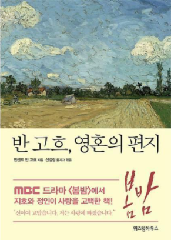

/1권/
p80
나는 내가 한 일을 후회하지 않을 테다. 더 적극적인 사람이 더 나아진다. 게으르게 앉아 아무것도 하지 않느니 실패하는 쪽을 택하겠다.
p124
화가 공동체를 만들어서 그림 판 돈을 나누어 갖자고 화가들을 설득하는 것보다는 화상과 미술애호가들을 설득해서 인상파 화가들의 그림을 사도록 하는 게 더 쉬울지도 모르겠다.
피사로는 색채가 서로 조화를 이루거나 부조화를 이루면서 만들어내는 효과를 대담하게 과장해야 한다고 말했는데, 정말 옳은 말이다. 그건 데셍에서도 마찬가지다. 실제와 똑같이 그리고 색칠하는 게 우리가 추구해야 할 일이 아니다. 설령 현실을 거울로 비추는 것처럼 색이나 다른 모든것을 있는 그대로 그리는 일이 가능할지라도, 그렇게 만들어낸 것은 그림이 아니라 사진에 불과하기 때문이다.
그림 그리는 일은 힘든 노동과 딱딱한 계산을 병행하는 일이다. 그래서 작업 중에는 어려운 배역을 맡고 무대 위에 선 배우처럼 극도로 긴장하게 되고, 단 30분 동안 수만 가지 생각을 해야 할 때도 있다.
누가 뭐라고 해도, 내가 그림을 그린 캔버스가 아무것도 그리지 않은 캔버스보다 더 가치가 있다. 그 이상을 주장하고 싶지는 않다. 단지 그 사실이 나에게 그림을 그릴 권리를 주며, 내가 그림을 그리는 이유라는 걸 말하고 싶었다. 그래, 나에게는 그럴 권리가 있다! 그림은 나에게 건강을 잃은 앙상한 몸뚱아리만 남겨주었고, 내 머리는 박애주의자로 살아가기 위해 아주 돌아버렸지. 넌 어떠냐. 넌 내 생활을 위해 벌써 15만 프랑가량의 돈을 썼다. 그런데...... 우리에게 남은 건 아무것도 없다.
미리 그런 사실을 알았더라면 난 단념했을지도 모른다. 너의 사랑이 없었다면 그들은 아무런 가책 없이 나를 자살로 몰아넣었을 테고, 내가 비겁하든 아니든 결국 나는 자살로 생을 마감했겠지. 우리가 사회에 대항하고 스스로를 방어할 수 있을 만한 근거지가 있었으면 좋겠다.
북아프리카에 있는 외인부대에 5년쯤 들어가서 이 곤경을 벗어날 수 있다면, 차라리 그쪽이 더 낫지 않을까 생각한다. 갇혀서 그림도 그리지 못한다면 내 상태가 나아지기는 어려울 것 같고, 병원에서는 미친 사람이 살아 있는 동안은 한 달에 100프랑씩 꼬박꼬박 받아낼 게 분명하기 때문이다. 이건 불리한 거래 아니냐. 어떻게 해야 좋을까? 군대에서 나를 받아줄까?
/2권/
p44
이미 여러가지 관점에서 나는 편집광이거나 기이한 심술쟁이를 거쳤네. 물론 여태 혼자라고 느낄때도 있지. 그러나 한편으로 이 고독은 나로 하여금 변치 않는 무엇, 즉 자연의 영원한 아름다움에 주의를 집중하도록 만드네. 오래전에 읽은 '로빈슨 크루소'에서도 고독은 용기를 잃게 하는 게 아니라, 오히려 자신을 위해 필요한 활동을 창조하게 만드는 힘으로 묘사되고 있지.